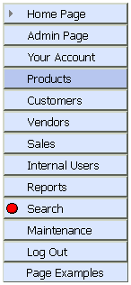

NAV_INT Navigation Component
Purpose
The NAV_INT navigation component provides the mechanism for moving between the administrative pages of the application.

Description
The NAV_INT navigation component is a has a vertical style and uses mouse over to open submenus.
Containers
ASWSEARCH.A5W, ASWSENDEMAIL.A5W, ASWSPECLIST.A5W, ASWUSERLIST.A5W, ASWUSERONE.A5W, ASWVENDORS.A5W, ASWPACKREINDEX.A5W, TEMPLATEINT.A5W
Notable Component Property Settings
|
Control |
Property |
Description |
|
Navigation System |
Root Settings > Display method |
"Vertical Toolbar" |
|
Root Settings > Menu Event |
"on | |
|
Root Settings > Style |
"asw" | |
|
Specials List |
Node Settings > Security Groups |
Accounting, Administrators, Marketing |
|
Internal Users |
Node Settings > Security Groups |
Administrators |
See Also
Supported By
Alpha Five Version 8 and Above